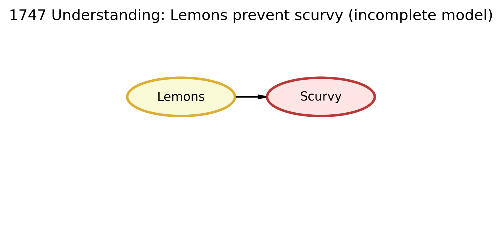
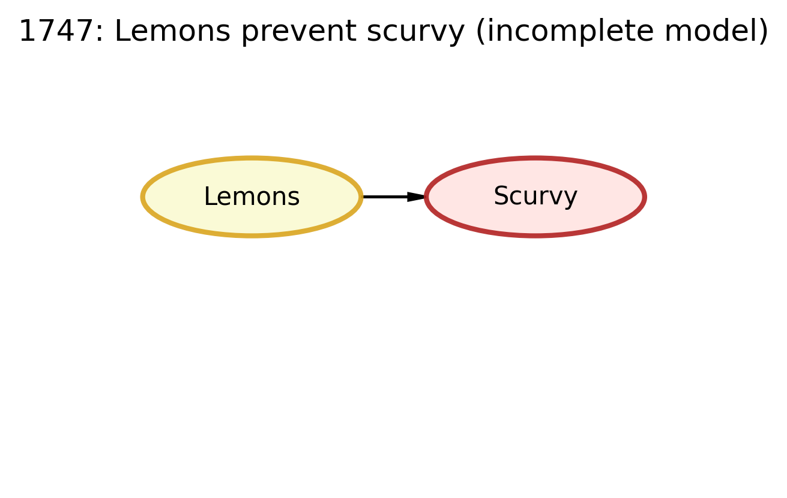
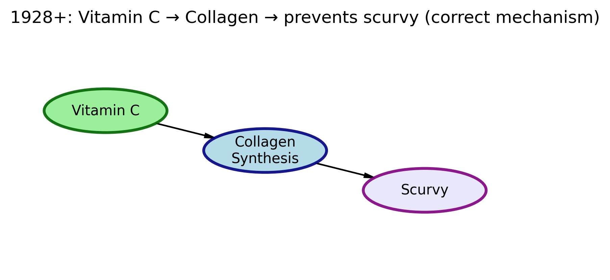

import os
import daft
import matplotlib.pyplot as plt
# high-quality export settings
plt.rcParams['figure.dpi'] = 150
plt.rcParams['savefig.dpi'] = 300
# make sure we have an output folder for images
os.makedirs("img", exist_ok=True)
def render_and_save(pgm, title, outfile):
fig = plt.figure(figsize=(4,3))
pgm.render()
plt.title(title, fontsize=12)
plt.savefig(outfile, dpi=300, bbox_inches="tight")
plt.close(fig) # prevents raw <Figure ...> output in final HTMLThe Scurvy Causal Story
Recreating Historical DAGs with DAFT
The Scurvy Causal Story
Scurvy was a deadly disease for sailors on long sea voyages. Their gums bled, their teeth fell out, their wounds didn’t heal, and many died. The cure was actually discovered in 1747, then basically lost for over 150 years because people adopted the wrong explanation, and it was finally fully understood in the late 1920s.
We’ll look at three historical explanations:
1747 understanding: “Lemons prevent scurvy.”
This worked, but no one knew why.Wrong theory: “Acid kills bacteria in food, so that prevents scurvy.”
This was incorrect and brought scurvy back.Modern understanding (1928+): “Vitamin C is required for collagen repair. Without it, you get scurvy.”
This is the true mechanism.
In every diagram below, an arrow means “we believe this causes that.”
The Three DAGs: Your Mission
Your task is to recreate these three historical DAGs using DAFT, making them visually appealing and professionally formatted.
DAG 1: The 1747 Understanding (Correct but Incomplete)
Historical Context: In 1747, James Lind discovered that lemons prevent scurvy through a controlled experiment. However, the understanding was incomplete - they knew lemons worked but not why.
1747: “Lemons prevent scurvy” (incomplete but life-saving)
In 1747, James Lind ran one of the first controlled medical experiments on British sailors with scurvy. He gave some sailors citrus, and they recovered.
The belief after this experiment was basically: lemons → prevent scurvy.
This was correct in outcome — lemons really did cure scurvy — but nobody knew why it worked.

# DAG 1: 1747 understanding
# Lemons were believed to prevent scurvy (correct outcome, unknown mechanism)
import os
import daft
import matplotlib.pyplot as plt
# high-quality export settings
plt.rcParams['figure.dpi'] = 150
plt.rcParams['savefig.dpi'] = 300
# make sure we have an output folder for images
os.makedirs("img", exist_ok=True)
def render_and_save(pgm, title, outfile):
fig = plt.figure(figsize=(4,3))
pgm.render()
plt.title(title, fontsize=12)
plt.tight_layout()
plt.savefig(outfile, dpi=300, bbox_inches="tight")
plt.close(fig)
pgm_1747_style = daft.PGM(
dpi=150,
shape=[4,3],
origin=[0,0],
alternate_style="outer"
)
pgm_1747_style.add_node(
"lemons",
"Lemons",
1, 2,
aspect=2.8,
scale=1.1,
plot_params={
"facecolor": "lightgoldenrodyellow",
"edgecolor": "goldenrod",
"linewidth": 2,
"alpha": 0.9,
}
)
pgm_1747_style.add_node(
"scurvy",
"Scurvy",
3, 2,
aspect=2.8,
scale=1.1,
plot_params={
"facecolor": "mistyrose",
"edgecolor": "firebrick",
"linewidth": 2,
"alpha": 0.9,
}
)
pgm_1747_style.add_edge("lemons", "scurvy")
render_and_save(
pgm_1747_style,
title="1747: Lemons prevent scurvy (incomplete model)",
outfile="img/dag_1747_styled.png"
)C:\Users\rtark\AppData\Local\Temp\ipykernel_41196\299676319.py:19: UserWarning: This figure includes Axes that are not compatible with tight_layout, so results might be incorrect.
plt.tight_layout()
DAG 2: The Misguided Belief (Wrong Understanding)
Historical Context: Over time, people came to believe it was the acid in lemons that killed bacteria which was causing scurvy. This led to lemons being replaced by limes (cheaper but less Vitamin C) or just using acids like vinegar, causing scurvy to return.
Your Task: Recreate this DAG showing the incorrect understanding of the data generating process.
Reference Image: 
# DAG 2 (Styled): Misguided Belief
# Historical story:
# People thought it was the acid that killed bacteria, and that killing bacteria prevented scurvy.
# This was WRONG. It led people to replace lemons with cheaper acidic stuff (like vinegar or limes),
# and scurvy came back.
pgm_bad_style = daft.PGM(
dpi=150,
shape=[6,3],
origin=[0,0],
alternate_style="outer"
)
# Node: Acid
pgm_bad_style.add_node(
"acid",
"Acid",
1, 2,
aspect=2.8,
scale=1.1,
plot_params={
"facecolor": "moccasin",
"edgecolor": "darkorange",
"linewidth": 2,
"alpha": 0.9,
}
)
# Node: Bacteria in Food
pgm_bad_style.add_node(
"bacteria",
"Bacteria\nin Food",
3, 1.5,
aspect=2.8,
scale=1.1,
plot_params={
"facecolor": "peachpuff",
"edgecolor": "orangered",
"linewidth": 2,
"alpha": 0.9,
}
)
# Node: Scurvy
pgm_bad_style.add_node(
"scurvy",
"Scurvy",
5, 1,
aspect=2.8,
scale=1.1,
plot_params={
"facecolor": "mistyrose",
"edgecolor": "firebrick",
"linewidth": 2,
"alpha": 0.9,
}
)
# Edges: Acid -> Bacteria -> Scurvy
pgm_bad_style.add_edge("acid", "bacteria")
pgm_bad_style.add_edge("bacteria", "scurvy")
# Render and save to file
render_and_save(
pgm_bad_style,
title="Misguided Belief: Acid kills bacteria -> prevents scurvy (WRONG)",
outfile="img/dag_misguided_styled.png"
)C:\Users\rtark\AppData\Local\Temp\ipykernel_41196\299676319.py:19: UserWarning: This figure includes Axes that are not compatible with tight_layout, so results might be incorrect.
plt.tight_layout()
Misguided Belief (Wrong Theory):
People later claimed the acid was killing bacteria, and that is why scurvy went away. So they thought:
Acid → kills bacteria in food → no scurvy.
This was wrong.
They started using cheaper acidic things (like limes, vinegar) instead of real citrus high in Vitamin C.
Result: scurvy came back, because removing bacteria wasn’t the real mechanism. ### DAG 3: The 1928 Understanding (Complete and Correct)
Historical Context: In 1928, the true mechanism was discovered - it was Vitamin C (ascorbic acid) that prevented scurvy. This complete understanding finally explained why lemons worked and why the acid theory was wrong.
Your Task: Recreate this DAG showing the complete and correct understanding of the scurvy data generating process.
Reference Image: 
# DAG 3 (Styled): 1928+ Correct Understanding
# Historical story:
# By ~1928 and into the 1930s, scientists figured out that scurvy is caused by
# vitamin C deficiency. Vitamin C is needed for proper collagen synthesis.
# Without collagen, tissues break down → scurvy.
#
# So the true causal story is: Vitamin C -> Collagen Synthesis -> Prevents Scurvy.
pgm_1928_style = daft.PGM(
dpi=150,
shape=[7,3],
origin=[0,0],
alternate_style="outer"
)
# Node: Vitamin C
pgm_1928_style.add_node(
"vitc",
"Vitamin C",
1, 2,
aspect=2.8,
scale=1.1,
plot_params={
"facecolor": "lightgreen",
"edgecolor": "darkgreen",
"linewidth": 2,
"alpha": 0.9,
}
)
# Node: Collagen Synthesis
pgm_1928_style.add_node(
"collagen",
"Collagen\nSynthesis",
3, 1.5,
aspect=2.8,
scale=1.1,
plot_params={
"facecolor": "lightblue",
"edgecolor": "navy",
"linewidth": 2,
"alpha": 0.9,
}
)
# Node: Scurvy
pgm_1928_style.add_node(
"scurvy",
"Scurvy",
5, 1,
aspect=2.8,
scale=1.1,
plot_params={
"facecolor": "lavender",
"edgecolor": "purple",
"linewidth": 2,
"alpha": 0.9,
}
)
# Edges: Vitamin C -> Collagen Synthesis -> Scurvy
pgm_1928_style.add_edge("vitc", "collagen")
pgm_1928_style.add_edge("collagen", "scurvy")
# Render and save to file
render_and_save(
pgm_1928_style,
title="1928+: Vitamin C → Collagen → prevents scurvy (correct mechanism)",
outfile="img/dag_1928_styled.png"
)C:\Users\rtark\AppData\Local\Temp\ipykernel_41196\299676319.py:19: UserWarning: This figure includes Axes that are not compatible with tight_layout, so results might be incorrect.
plt.tight_layout()
1928+ Scientific Understanding (Correct Mechanism):
Researchers finally identified the true mechanism: Vitamin C is required for proper collagen synthesis. Without collagen repair, tissues break down → scurvy.
So the real causal story is: Vitamin C → Collagen synthesis → Prevents scurvy.
This explains EVERYTHING: - Why lemons worked in 1747 (they had Vitamin C 💡) - Why “it’s just acid killing bacteria” was wrong - How to actually prevent and cure scurvy
Student Requirements Section: Mastering DAFT Visualization
Your Task: Demonstrate your mastery of DAFT through comprehensive recreation of the three scurvy DAGs and thoughtful analysis. The bulk of your grade comes from successfully recreating the DAGs and answering the discussion questions.
Important📊 Challenge Requirements
Complete all DAG recreation sections:
- DAG 1 (1747): Lemons prevent scurvy - correct but incomplete
- DAG 2 (Misguided): Acid kills bacteria - wrong understanding
- DAG 3 (1928): Vitamin C prevents scurvy - complete and correct
- Optional: Add a little professional styling to the DAGs to make them more visually appealing (example: use nice fill colors and/or enclose the text in the ellipse completely).
Professional Quality Standards
Your DAGs should:
- (90% grade): Accurately recreate the reference images
- (100% grade): Add professional colors and possibly play with shapes to make it more visually appealing (example: use nice fill colors and/or enclose the text in the ellipse completely). Erase everything but the story of scurvy and the three DAGs
- Include clear, readable labels
- Demonstrate understanding of DAFT customization options
- Be suitable for a business or academic audience
Example: Professional DAFT Node Styling
Here’s an example (see Figure 1) of how to create a professionally styled node in DAFT with nice captions and references to the figure:
import daft
import matplotlib.pyplot as plt
# Create a PGM object
pgm = daft.PGM(dpi=150, alternate_style="outer")
# Example of a professionally styled node
pgm.add_node("vitamin_c", "Vitamin C\nIntake" + r" $(X)$", 1, 1, aspect = 3, scale = 1.1,
plot_params={
'facecolor': 'lightgreen',
'edgecolor': 'darkgreen',
'linewidth': 2,
'alpha': 0.8,
})
pgm.add_node("health", "Healthiness\n"+r" $(Y)$", 3.25, 1, aspect = 3, scale = 1.1,
plot_params={
'facecolor': 'thistle',
'edgecolor': 'purple',
'linewidth': 2,
'alpha': 0.8,
})
pgm.add_edge("vitamin_c", "health")
pgm.render()
Key Styling Parameters:
facecolor: Background color of the nodeedgecolor: Border color of the node
linewidth: Thickness of the borderalpha: Transparency (0.0 to 1.0)fontsize: Size of text inside the nodeaspect: Width/height aspect ratio of the node (default: 1.0)scale: Height of the node (default: 1.0)
Getting Started: Repository Setup 🚀
Important📁 Getting Started
Step 1: Create a new repository in your GitHub account named “daftChallenge” (forked from https://github.com/flyaflya/daftChallenge)
Step 2: Clone your repository locally using Cursor (or VS Code)
Step 3: Be sure to install DAFT in your environment: pip install 'daft-pgm'.
Step 4: Modify your local copy of this index.qmd file to complete the challenge and get it to be a github pages website.
Getting Started Tips
Key DAFT Resources
Essential DAFT Documentation:
Key DAFT Parameters to Explore:
plot_params: Dictionary of matplotlib parameters for stylingaspect: Controls node width (default: 1.0)scale: Controls node size (default: 1.0)fontsize: Text size in the nodealternate: Use alternative node shape (True/False)
Grading Rubric 🎓
90% Grade: Successfully recreate all 3 DAGs with good visual quality.
100% Grade: Recreate all 3 DAGs with enhanced quality and visual aesthetics (example: use nice fill colors and/or enclose the text in the ellipse completely).
Submission Checklist ✅
Minimum Requirements (Required for Any Points):
90% Grade Requirements:
100% Grade Requirements: